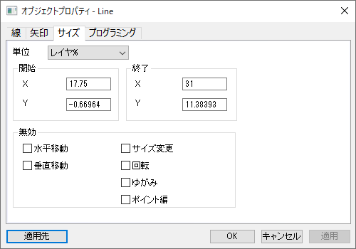
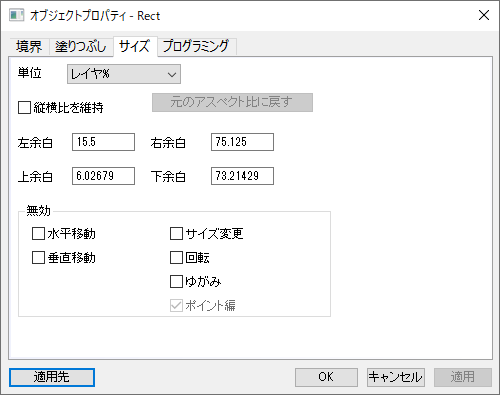

| 矢印/線オブジェクト | 矩形/円形/多角形/領域オブジェクト |
|  |  |
オブジェクト位置とサイズの単位を、単位ドロップダウンリストから指定します。
このチェックボックスにチェックを付けると縦横比を維持してサイズ変更できます。
元のアスペクト比に戻す ボタンをクリックして、表のサイズを元のアスペクト比に修正します。
この 無効 オプションはオブジェクトの形状や位置を変更出来るかを設定します。カテゴリー:図形オブジェクトを作成するを参照ください。
| 水平移動 | チェックを付けると水平方向の移動を無効にします。 |
|---|---|
| 垂直移動 | チェックを付けると垂直方向の移動を無効にします。 |
| サイズ変更 | チェックを付けるとサイズ変更を無効にします。 |
| 回転 | チェックを付けると回転操作を無効にします。 |
| ゆがみ | チェックを付けると傾斜をつける操作を無効にします。 |
| ポイント編集 | 個々のオブジェクトポイントの位置が編集されないようにするには、このチェックを付けます。 |